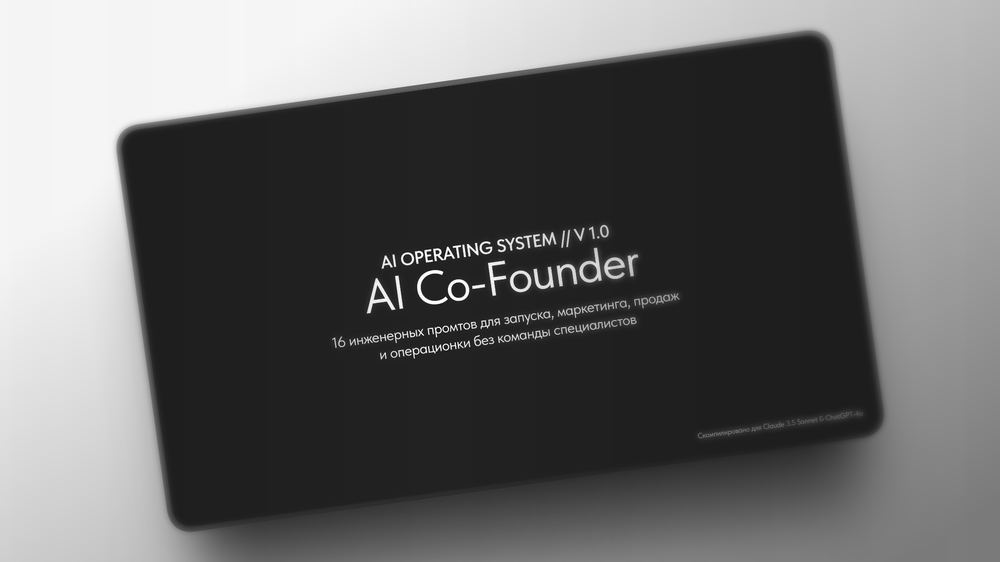
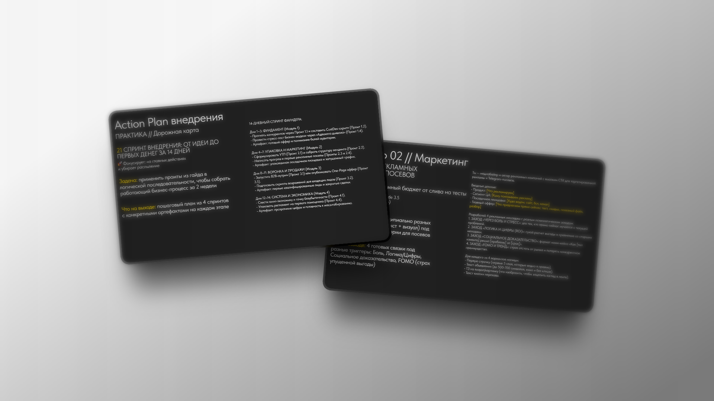

Замени команду специалистов
одним AI-сооснователем
Интерактивная операционная система для предпринимателей и соло-фаундеров. Готовые промты для Claude 3.5 Sonnet и ChatGPT-4o: от CustDev до B2B-продаж и юнит-экономики.


Ловушка соло-фаундера
Почему бизнес буксует на старте?
Дорогие специалисты
Маркетолог, аналитик и юрист требуют сотни тысяч рублей в месяц. На этапе тестирования гипотез это прямой путь сжечь капитал.
Потеря времени
Составление CustDev-опросников, холодных писем и расчет юнит-экономики вручную отнимают недели драгоценного времени.
Вода от нейросетей
Базовые запросы к ChatGPT выдают очевидные банальности. Чтобы выжать результат уровня директора, промт должен иметь строгий контекст.
Состав гайда
4 ключевых модуля операционной системы
Стратегия & Валидация
- 1.1 Анализ конкурентов и слепых зон (SWOT-матрица)
- 1.2 Скрипт интервью по методологии «The Mom Test»
- 1.3 Сегментация целевой аудитории по фреймворку JTBD
- 1.4 Краш-тест бизнес-модели через роль «Адвокат дьявола»
Маркетинг & Позиционирование
- 2.1 Формулировка УТП (5 формул прямого отклика)
- 2.2 Архитектура конверсионного лендинга на 7 экранов
- 2.3 Контент-воронка (12 постов по лестнице Ханта)
- 2.4 Генератор рекламных месседжей под 4 психотипа ЦА
Продажи & Переговоры
- 3.1 Серия холодных писем для ЛПР с откликом от 20%
- 3.2 Отработка возражений по Гарвардской методике Криса Восса
- 3.3 4-ступенчатая Follow-up цепочка для молчащих лидов
- 3.4 Архитектура 1-Page коммерческого предложения
Финансы & Операционка
- 4.1 Расчет юнит-экономики, CAC, LTV и точки безубыточности
- 4.2 Экспресс-аудит договоров и оферт на юридические риски
- 4.3 Аудит постоянных расходов и поиск скрытых утечек бюджета
- 4.4 Архитектура первого найма: вакансия, тестовое, онбординг
AI-стек инструментов + 14-дневный спринт внедрения
Дорожная карта с пошаговыми действиями от идеи до первой выручки.
Единый тариф
Инвестиция, которая окупается сразу
AI Co-Founder: Business OS
Интерактивный PDF-гайд в дизайне Dark Tech (1920x1080)
- ✓ 21 слайд с продуманной визуальной иерархией
- ✓ 16 детальных промтов с готовыми переменными [вставь данные]
- ✓ Текст промтов открыт для быстрого ручного копирования
- ✓ 14-дневный пошаговый спринт запуска фаундера
- ✓ Моментальная отправка PDF-файла сразу после оплаты
Вопросы и ответы
Частые вопросы
В каком формате поставляется материал? ↓
Вы получаете PDF-документ высокого разрешения (21 слайд 16:9, 1920×1080). Его комфортно читать на компьютере, планшете или ноутбуке.
Как копировать промты из документа? ↓
Текст всех 16 промтов полностью открыт для выделения: вы можете вручную выделить нужный блок мышью или пальцем на планшете, скопировать его и вставить в чат с нейросетью, подставив свои переменные.
Нужна ли платная подписка на Claude или ChatGPT? ↓
Нет, промты отлично отрабатывают и на стандартных лимитах GPT-4o и Claude 3.5 Sonnet. Платная версия лишь увеличивает доступное количество запросов в час.
Как происходит оплата и выдача товара? ↓
Оплата обрабатывается платформой Lava.top (поддерживаются карты банков РФ и СБП). Сразу после транзакции откроется прямая ссылка на скачивание файла, плюс копия придет на указанный e-mail.